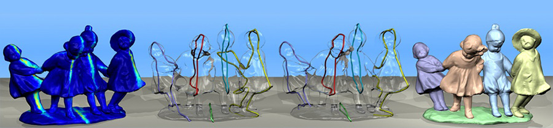
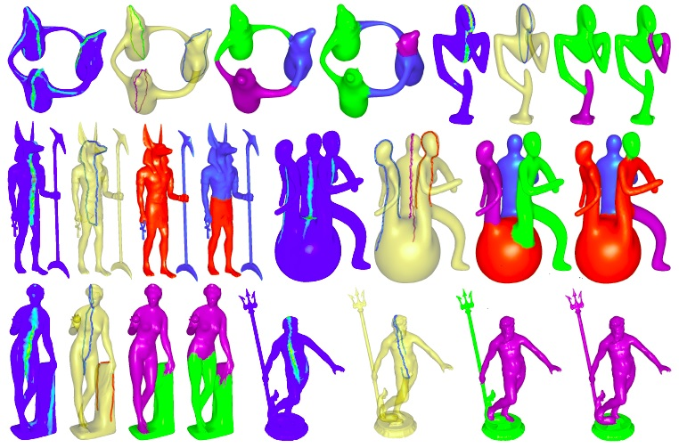

Partial Intrinsic Reflectional Symmetry of 3D Shapes
Kai Xu1,2, Hao Zhang1, Andrea Tagliasacchi1,
Ligang Liu3, Guo Li3, Min Meng3, Yueshan Xiong2
1Simon
Fraser University, 2National University of Defense Technology, 3Zhejiang University
ACM Transactions
on Graphics (SIGGRAPH Asia 2009), 28(5)

Figure 1: Given a closed 2-manifold mesh, we compute a scalar field (left), which accentuates the axes of prominent, partial intrinsic reflectional
symmetries. The top few (closed) Voronoi boundaries (middle-left) between symmetric point pairs, as induced by the scalar field, can be imperfect. We
develop an iterative refinement scheme to extract the final set of intrinsic reflectional symmetry axes or IRSAs (middle-right), which can be open curves.
Incorporating symmetry cues offered by IRSAs into a conventional mesh segmentation scheme leads to highly semantic results (right).
|
Abstract
|
While many 3D objects exhibit various forms of global symmetries, prominent intrinsic symmetries which exist only on parts of an object are also well recognized. Such partial symmetries are often seen as more natural compared to a global one, especially on a composite shape. We introduce algorithms to extract partial intrinsic reflectional symmetries (PIRS) of a 3D shape. Given a closed 2-manifold mesh, we develop a voting scheme to obtain an intrinsic reflectional symmetry axis (IRSA) transform, which computes a scalar field over the mesh so as to accentuate prominent IRSAs of the shape. We then extract a set of explicit IRSA curves on the shape based on a refined measure of local reflectional symmetry support along a curve. The iterative refinement procedure combines IRSA-induced region growing and region-constrained symmetry support refinement to improve accuracy and address potential issues due to rotational symmetries in the shape. We show how the extracted IRSA curves can be incorporated into a conventional mesh segmentation scheme so that the implied symmetry cues can be utilized to obtain more meaningful results. We also demonstrate the use of IRSA curves for symmetry-driven part repair.
|
|
|
Paper |
|
|
|
Slides |
|
|
|
Video |
|
|
|
| Images |

Figure
2: A gallery of results for IRSA transform, IRSA curve extraction, and symmetry-aware mesh segmentation. For each model, the
first three images show the above results, in that order. The last image shows the result of using the segmentation algorithm of Liu and
Zhang [2007], with the same number of parts as for its symmetry-aware counterpart. For the snowmen model, purely symmetry-driven region
growing was used. For the rest, symmetry-based merging was performed on an over-segmented set of parts from [Liu and Zhang 2007].
|
|
|
| Thanks |
We are grateful to the reviewers for their valuable comments.
The mesh segmentation code was provided by Rong Liu and
the SDF code was originally developed by Lior Shapira. Thanks
also go to Patricio Simari, Karan Singh, Ariel Shamir, and Daniel
Cohen-Or for fruitful discussions. The Momento model was courtesy
of Oscar Au and the remaining models were either from
the AIM@SHAPE Shape Repository or captured by our Polhemus
laser scanner. This work is supported in part by grants from
NSERC (No. 611370), the 973 National Key Basic Research Foundation
of China (2009CB320801), the 863 Program of China (No.
2007AA01Z313), NSFC (No. 60773022), the China Scholarship
Council and the joint grant of the National Natural Science Foundation
of China and Microsoft Research Asia (60776799).
|
|
|
| Bibtex |
@article
{xu_siga09_pirs,
title = {Partial Intrinsic Reflectional Symmetry of 3D Shapes},
author
= {Kai Xu and Hao Zhang and Andrea Tagliasacchi and Ligang Liu and Guo Li and Min Meng and Yueshan Xiong}
journal
= {ACM Transactions on Graphics (Proceedings SIGGRAPH Asia 2009)},
volume
= {28},
number
= {5},
pages
= {138:1--138:10},
year
= {2009}
}
|
 
|